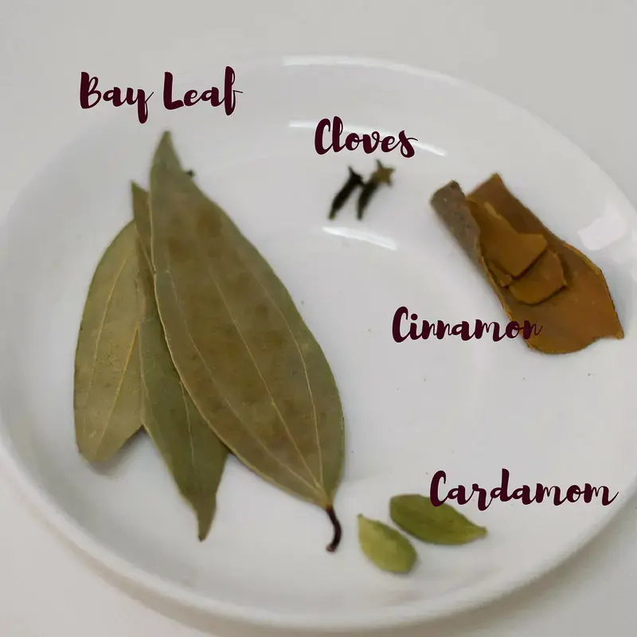
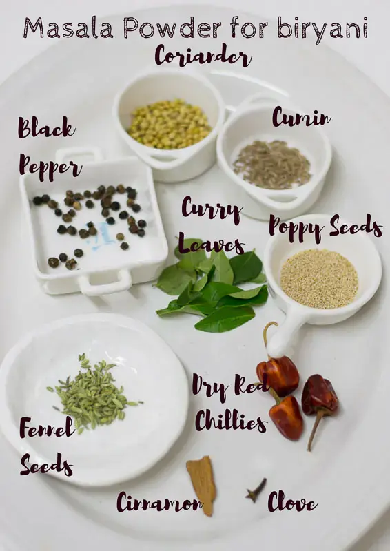
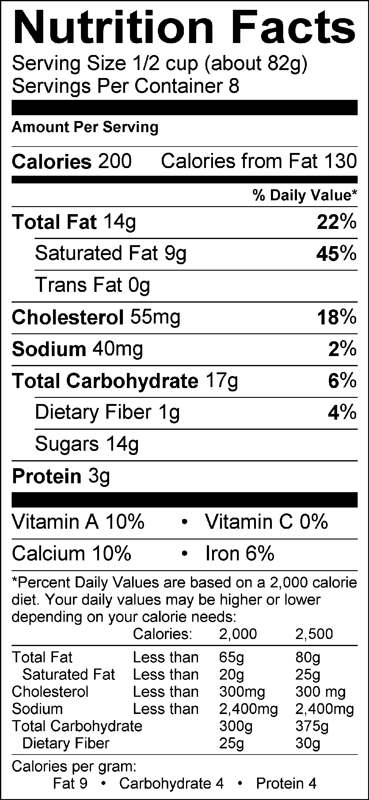

Biryani is a delicious South Asian rice dish made with aromatic spices, basmati rice, Seeraga samba rice, and a variety of meats or vegetables. It is a flavorful and satisfying meal that is popular in many parts of the world. Traditional and delicious South Indian Mutton biryani served with raita.

Prep Time: 30 Minutes (mutton cooking time)
Cook Time: 30 Minutes
Recipe: Indian
Serves 6

Ingredients
- Mutton-1 kg
- Turmeric powder-3/4 Tsp
- Chili powder-2 Tsp
- Salt to taste
- Ghee-2 Tbsp
- Oil-1 Tbsp
- Cinnamon
- Cardamom pods
- Few cloves
- Bay leaf
- Large onions-4nos thinly sliced
- Tomatoes-3nos chopped
- Grounded Masala paste
- Salt to taste
- Diluted Coconut Milk-3 cups
- Coriander leaves
- Mint leaves
- Basmati Rice-3 cups (soaked 30 mins)
- Shallots-6nos
- Garlic cloves
- Ginger
- Green & Red chili-2nos
- Few Mint leaves
- Few Coriander leaves
- Coriander powder-1 Tsp
- Little water
For Pressure Cooking
For Masala Paste


Steps to Follow
- To marinate the mutton add turmeric powder,chili powder and salt. set aside for 15mins.
- To prepare masala paste add the above mentioned ingredients and grind it.
- In a Cooker, heat the ghee-2 Tbsp and vegetable oil-1 Tbsp over medium heat.Add Cinnamon,Cardamom,cloves and Bay leaf.
- Add the thinly sliced Onions and cook until they turn brown.
- Add the chopped tomatoes and cook until they turn mushy.
- Add the grounded masala paste. Sauté for a minute until fragrant.
- Now, add the mutton pieces and cook until they are partially cooked.
- For 3 cups of rice used 3 cups of diluted coconut milk for good flavour, if u dnt want please avoid it and use water instead of it
- Added hand full of Coriander and Mint leaves
- Pressure Cook for 5-6 whistles until the meat is tender
- Once it cooked check the mutton consistency and add salt if necessary for rice
- Reduce the heat to low.Drain the soaked basmati rice and add it to the cooker. Mix gently and close it
- Let it cook for about 7 minutes or until the rice is cooked and the flavors have melded together.
- Remove from heat and let it sit aside for another 5 more minutes. Open and check it
- Your delicious biryani is ready to be served!